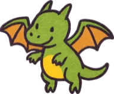
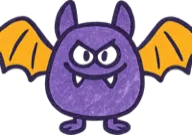
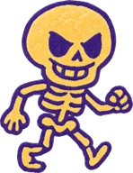
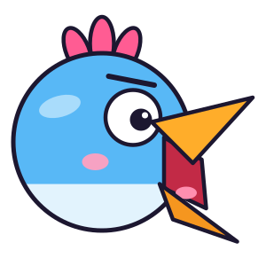
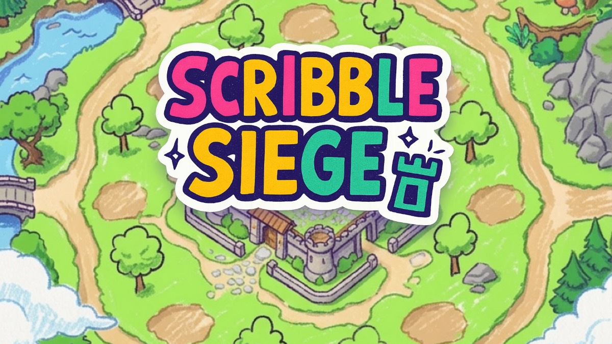

PLAY WITH YOUR VOICE
PLAY WITH YOUR VOICE
Squawk Rush
A voice-controlled arcade game. Hum to walk, yell to jump, and the louder you scream, the higher you fly. Seven modes, server-verified scores and an SKR cosmetics shop.
Independent developer on Solana Seeker
I make playful games for Solana Seeker that you play with your voice and your pen.




Seeker is where mobile and crypto finally meet: a phone with a wallet built in, and a community that owns what it uses. I build apps that feel native to that future, made for the phone in your hand rather than ported from somewhere else.
I love games, and I can't wait to design many more fun ones that help the Seeker ecosystem grow.
Every project starts with one question: what would be fun on a Seeker?
PLAY WITH YOUR VOICE
A voice-controlled arcade game. Hum to walk, yell to jump, and the louder you scream, the higher you fly. Seven modes, server-verified scores and an SKR cosmetics shop.

PLAY WITH YOUR PENA tower defense game where you draw every tower and monster yourself. The better you draw, the stronger it fights. The uglier it is, the funnier it gets.
A few principles behind everything I make.
Phones have microphones and cameras, not just screens. I use them as controllers so the fun goes beyond two thumbs.
Mobile Wallet Adapter sign-in, Seed Vault support, Seeker Genesis Token rewards and SKR payments verified on chain.
Ranked results are checked on the server, and anything you buy is cosmetic. Paying never changes the rules.
I work with Claude Code as a coding partner, which lets an independent developer ship faster and test more.
So far, one checkbox at a time.
Questions, feedback or ideas for working together are all welcome.